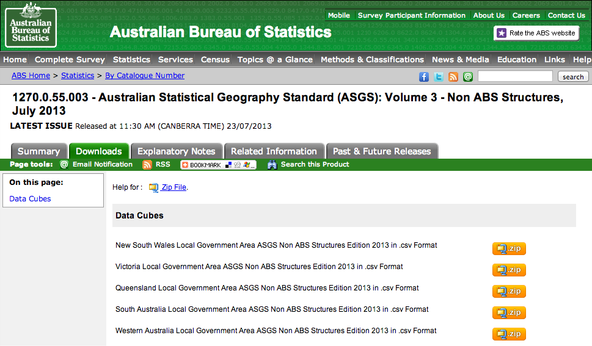
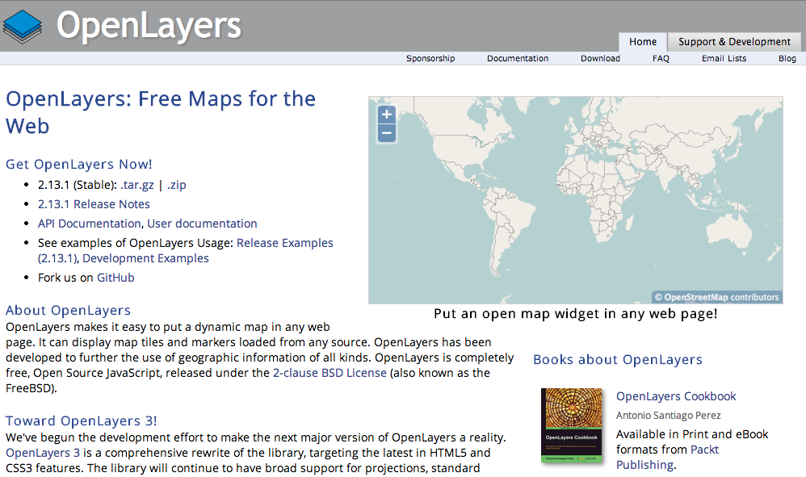
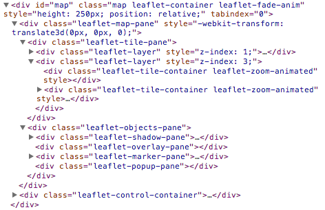

JavaScript Devs Don’t Get Lost
A (re-)introduction to mapping in the browser
You could always use Google Maps, right?
Art by Christoph Niemann at the Googleplex
If we just want a pretty picture,
we can use D3.js or Snap.svg / Raphaël
$ curl -Lo abs_suburbs.zip "http://www.abs.gov.au/AUSSTATS/subscriber.nsf/log?openagent&1270055003_ssc_2011_aust_shape.zip&1270.0.55.003&Data%20Cubes&D68DFFC14D31F4E1CA2578D40013268D&0&July%202011&22.07.2011&Previous"
$ unzip abs_suburbs.zip
$ ogr2ogr -f GeoJSON sydney.geojson SSC_2011_AUST.shp -clipsrc 150.84 -33.73 151.32 -34.09

d3.json("sydney.geojson", function(error, map_features) {
console.log(map_features);
});

var width = 900, height = 700;
var svg = d3.select("body").append("svg")
.attr("width", width)
.attr("height", height);
var projection = d3.geo.mercator()
.center([151.15, -33.90])
.scale(98000)
.translate([width / 2, height / 2]);
d3.json("sydney.geojson", function(error, map_features) {
svg.append("path")
.datum(map_features)
.attr("d", d3.geo.path().projection(projection));
});
var width = 900, height = 700;
var svg = d3.select("body").append("svg")
.attr("width", width)
.attr("height", height);
var projection = d3.geo.mercator()
.center([151.15, -33.88])
.scale(120000)
.translate([width / 2, height / 2]);
var path = d3.geo.path().projection(projection);
d3.json("sydney.geojson", function(error, map_features) {
svg.selectAll("path")
.data(map_features.features)
.enter().append("path")
.attr("class", "suburb")
.attr("d", path);
});
svg {
background: #deebf7;
}
path.suburb {
stroke: #3182bd;
fill: #deebf7;
}
But I want an interactive map!
One option is OpenLayers

Armchair Antarctica, GovHack Perth “best mapping application” winner
Mercator: not so good for the south pole
“No, I’m wondering where France really is.”

Leaflet: an awesome modern option
(for most use cases)
Shanghai and Zhejiang province, as seen through Mapbox
Leaflet maps are made of layers
(think Photoshop)

The tile layer can come
from several different providers


(... or you can roll your own)
Lots and lots of absolutely-positioned images

There’s a strong plugin community
It’s especially awesome for data visualisation
An example from a low-tech source